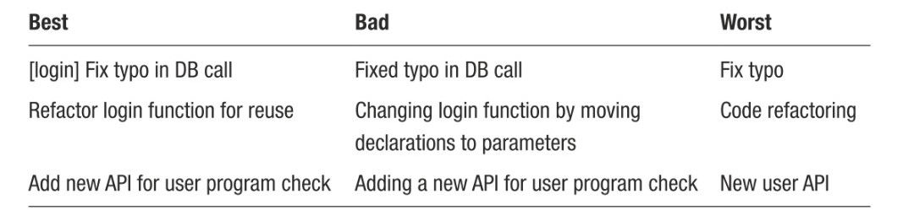

Commit Messages in Git
In this article, we will talk about Best Practices regarding commits and commit messages. The concept of appropriate Commit is one of the most overlooked topics in the Git environment. A commit should be self-determining, and independent and a commit message should be concise, clear, and informative. So in the future, if someone were to check out a commit, they would have a clear sense of what it is. So let's dive into the rules that must be taken into account before committing any changes.
Commit Best Practice
- if a commit needs other commits to make sense, it shouldn’t exist.
- never commit a half-done task.
- an excellent way to know if you are in the wrong path when splitting tasks is to check the possible commit message: if you think about using a very similar commit message, you probably made an error when breaking the task
- Your commits must be independent, atomic, and complete
- A commit message must be concise and straight to the point. You don’t need to tell everything that has changed. You just need to explain why those changes were made
- Remember that you are not the only one who will read the message
- Git message should tell WHY the changes were made. If someone wanted to see WHAT has changed, they would look into the Git diff.
- Commit messages should be easy on the eye. It shouldn't become more than a line because the Git log doesn't support new lines.
- You should not write messages longer than 50 characters.
- Obviously, Begin the message by a capital letter.
- Use the present time and get rid of unnecessary articles.
The messages must be clear and contextualized. Context is vital in big projects when many developers work on different parts. For example, many developers begin their commit messages by the context or area of the project touched by the changes(like the first row in the following table). Unclear or vague messages such as “change main,” “fix bugs,” “minor fixes,” and “updates” should be avoided at all costs. They are often misleading and force the user to look at diffs.
The following table is an illustration of different commit messages.
